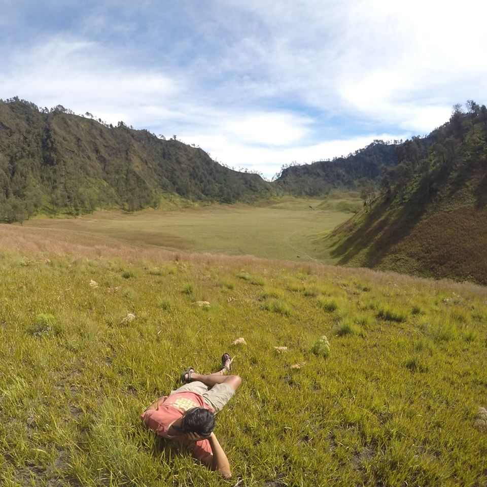
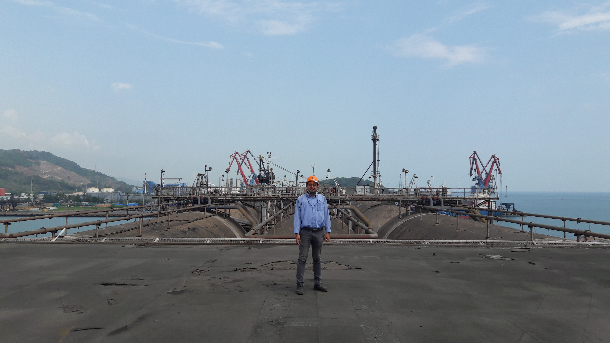
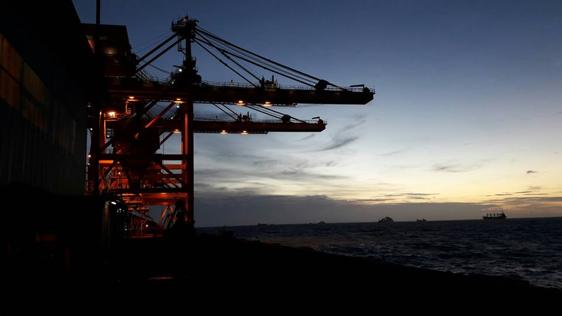
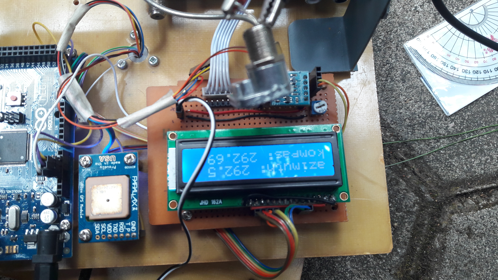
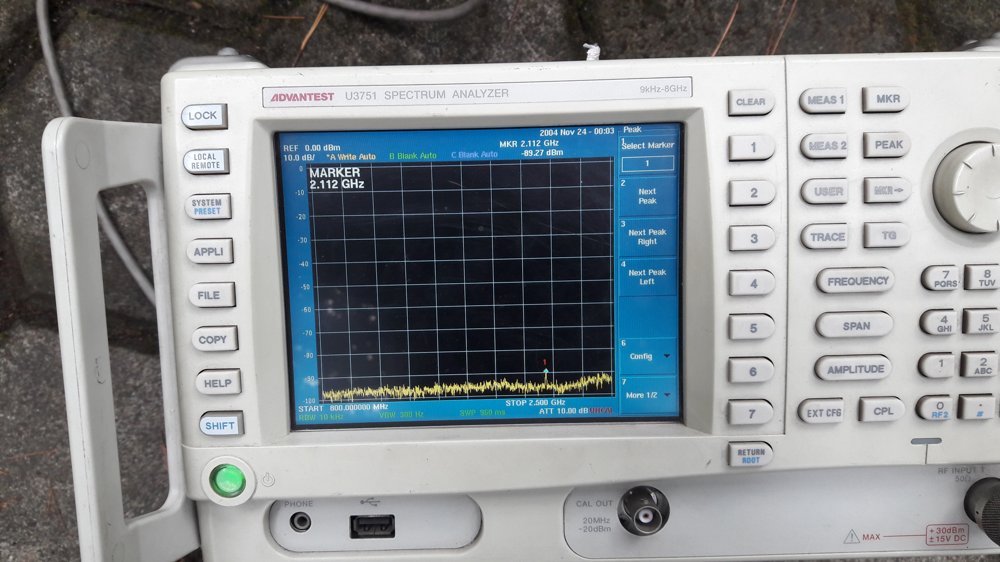

"serius tapi santai, santai tapi narget"
Ridwan Kamil

About Me
Hi, I am Asep Ridwan
___________________________________
I am an engineer
______________________
I am a solo traveler
________________________
I am a reptile keeper

-
Master Degree
University : Institut Teknologi Bandung Major : Electrical Engineering Sub Major : Telecommunication Engineering Thesis : Auto Beam Steering Microstrip Array Antenna for KU Band Mobile VSAT -
Bachelor Degree
University : Institut Sains dan Teknologi Nasional Major : Electrical Engineering Sub Major : Telecommunication Engineering Final Project : Programmable Logic Controller Remote Control Based Virtual Private Network -
Diploma
University : Politeknik Negeri Bandung Major : Electrical Engineering Sub Major : Telecommunication Engineering Final Project : Microcontroller Practice Module Based TCP/IP
Education

-
Electrical Engineer (April 2017 - August 2017)
- Making Engineering Estimate and scope of work (term of condition) of equipment repairing, tools & facility operations of company
- Making Technical Review by analyzing results from each problem as reference for repairing facility operations of company.
- Review electrical design, survey and supervision to work of maintenance and project development.
- Coordination, project supervision and give direction to contractor in
order to project finishing is matching with scheduling agreed and get quality such as in the term of reference. - Making periodicaly report in engineering field.
-
Electrical Technician(September 2013 - March 2017)
- Manage Milestone of Maintenance Planning Activity.
- Manage and Control Electrical Spare Parts for Ship Unloader and Conveyor.
- Handling Corrective Maintenance Planning.
- Handling fault report from related Department.
- Evaluates Ship Unloader and Conveyor electrical and automation
systems, components, and applications. - Develops Ship Unloader and Conveyor electrical and automation
systems by designing and modifying equipment to increase productivity and availability.
-
Automation Technician (April 2017 - August 2017)
- Preventive maintenance in electrical and automation system of ship unloader and conveyor.
- Corrective maintenance in electrical and automation system of ship unloader and conveyor.
- Troubleshooting in electrical and automation system of ship
unloader
and conveyor.
Experience
PT. Krakatau Bandar Samudera


Training and Skills
- Training and Reward
- PPMI IQC 2016 Gold Reward in PSS Stream
- 2016 Certificated Participating in SDN – NFV day Seminar held by ITB
- 2015 Certificated One of Top 10 Projects Participating in The IoT Innovation Challenge 2015 held by ITB
- 2010 Certificated Participant of Indonesian Intelegent Robot Contest, Battle Division held by DIKTI
- 2010 Certificated Programmable Logic Controller (PLC) – Industrial as trainee held by IARG ITB
- 2010 Certificated Distributed Control System (DCS) – Basic as trainee held by IARG ITB
- 2010 Certificated Routing Protocols and Concept (CCNA2) as trainee held by Cisco
- 2009 Certificated Network Fundamentals (CCNA1) as trainee held by Cisco
- 2008 Job Training, Access Copper Maintenance in PT. Telkom Indonesia
- Programming Skill
- ABB Compact Control Builder
- Arduino, MCS Basic Compiler
- AVR Code Vision
- Siemens Simatic S7
- Visual Basic
- Siemens WinCC
- Scada WinTR
